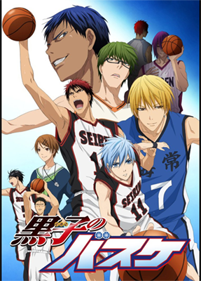

Description
Teikou Junior High School's basketball team is crowned champion three years in a row thanks to five outstanding players who, with their breathtaking and unique skills, leave opponents in despair and fans in admiration. However, after graduating, these teammates, known as "The Generation of Miracles," go their separate ways and now consider each other as rivals.
At Seirin High School, two newly recruited freshmen prove that they are not ordinary basketball players: Taiga Kagami, a promising player returning from the US, and Tetsuya Kuroko, a seemingly ordinary student whose lack of presence allows him to move around unnoticed. Although Kuroko is neither athletic nor able to score any points, he was a member of Teikou's basketball team, where he played as the "Phantom Sixth Man," who easily passed the ball and assisted his teammates.
Kuroko no Basket follows the journey of Seirin's players as they attempt to become the best Japanese high school team by winning the Interhigh Championship. To reach their goal, they have to cross pathways with several powerful teams, some of which have one of the five players with godlike abilities, whom Kuroko and Taiga make a pact to defeat.
Genre
Comedy, School, Shounen, Sports
Relevant Information
Bla Bla